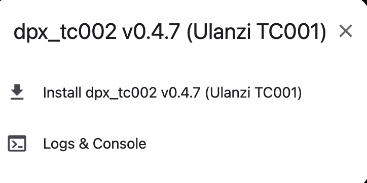
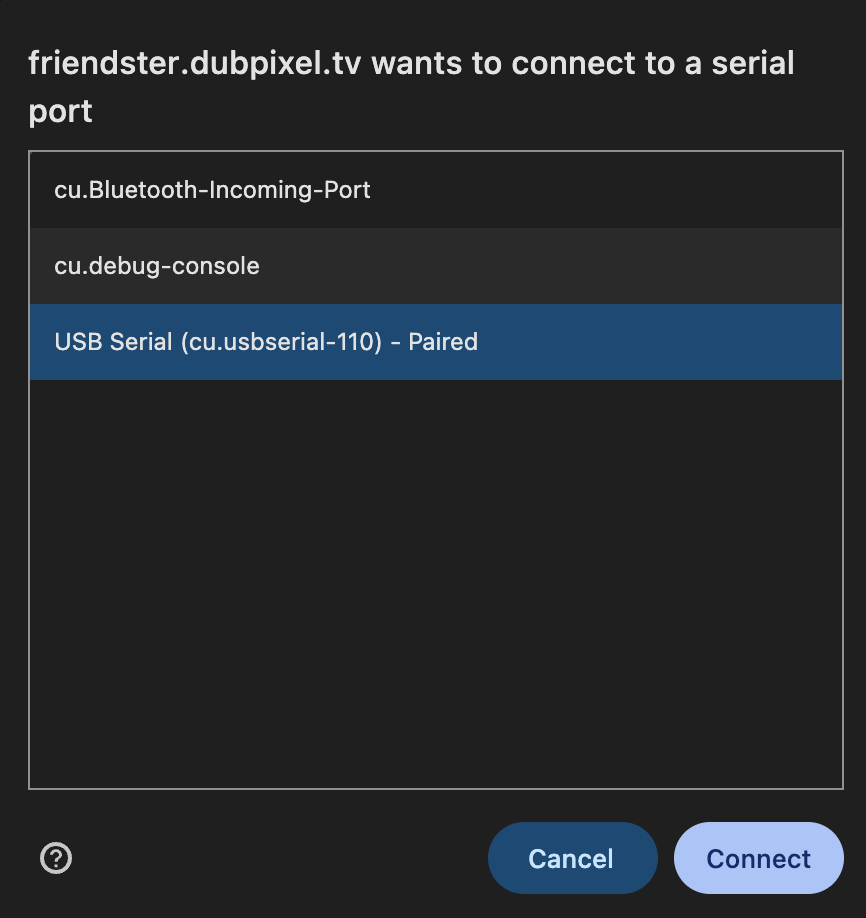
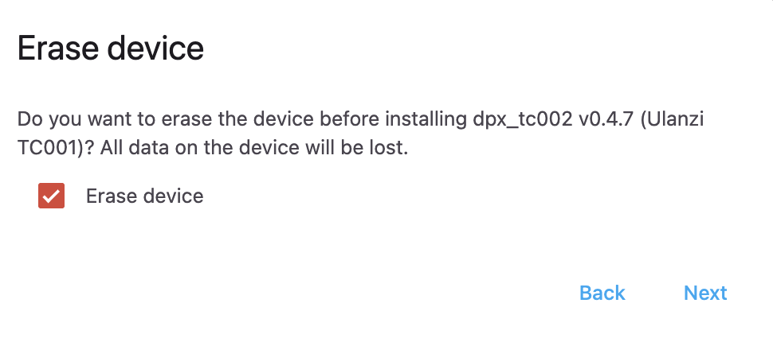
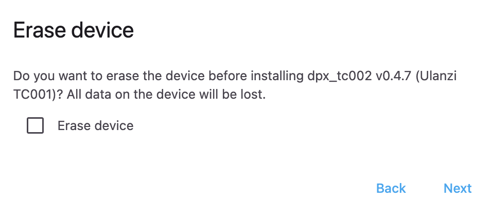
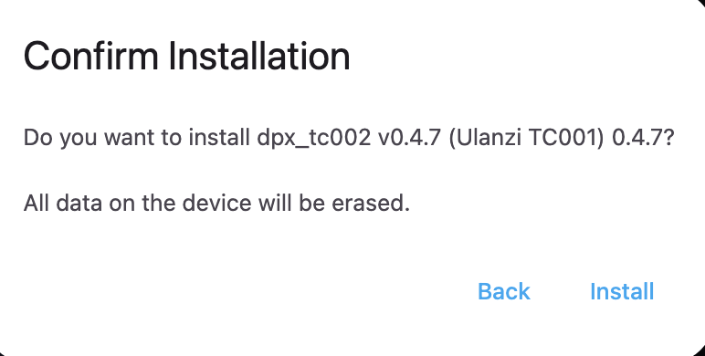
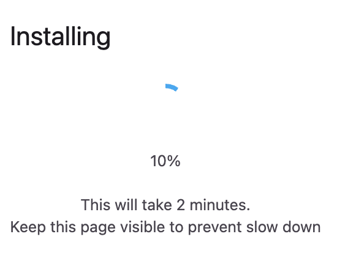
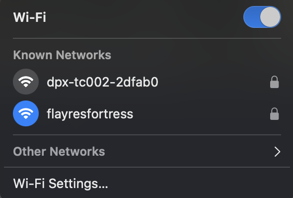
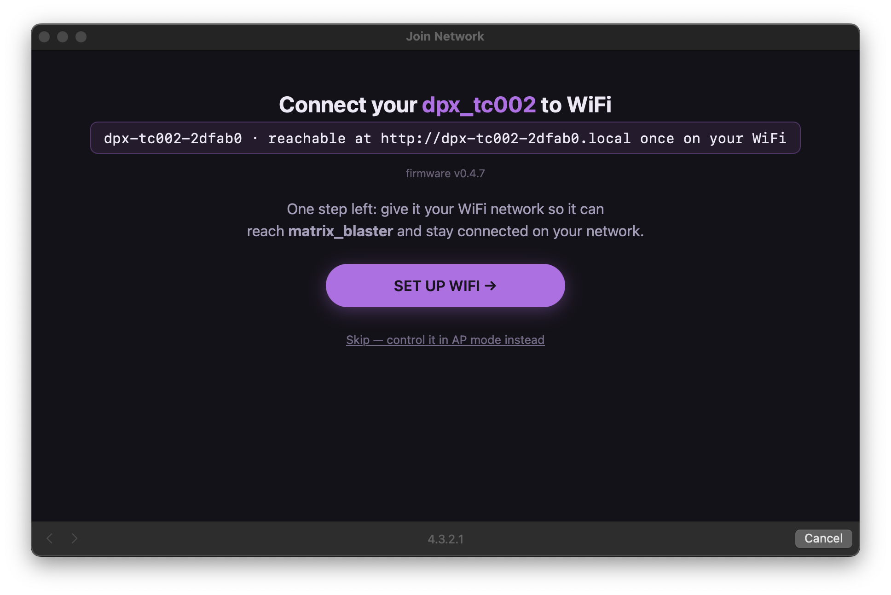
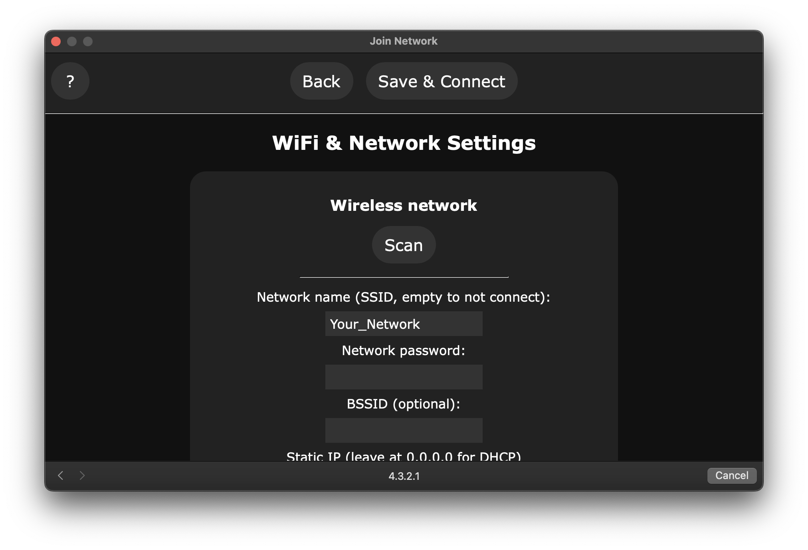
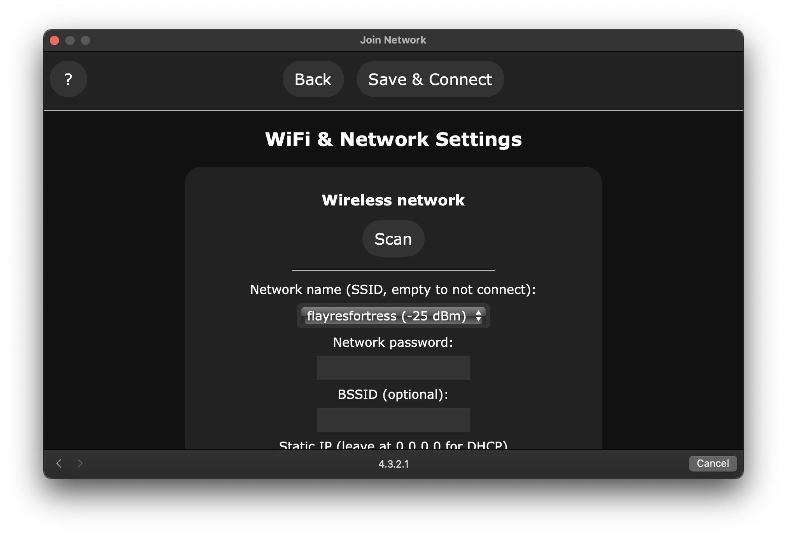

Visual install guide
Same install as the quick-flash page, walked through screen by screen — useful if you'd rather see it than read it.
Start here
Plug in the device, then click Connect above
Use a real data cable, not a charge-only one. Click the install button in the panel above — it opens a small dialog like this:

Click "Install dpx_tc002 …" — not "Logs & Console" (that's for debugging an already-flashed device).
Pick the serial port
Your browser will list available ports. Look for one named after a USB-serial chip (e.g. CP210x, CH340) or marked USB Serial — not Bluetooth ports.

Erase device — check this box if it's the first flash
Factory-fresh device, or previously ran stock Awtrix/other firmware? Check Erase device. Skipping this on a true first flash can leave old settings behind and cause boot issues.


Confirm and install
Click Install. This is the last step before it actually starts writing to the device.

Wait for it to finish — keep this tab open
Takes about 2 minutes. The buzzer will beep continuously the whole time — that's expected electrical noise while the chip sits in its bootloader, not the actual firmware running. It stops on its own once done.

Join the device's WiFi network
Once it reboots (buzzer stops), look for a new network named dpx-tc002-XXXXXX in your WiFi list — give it 10–15 seconds to show up. Password: dubpixel1.
XXXXXX is 6 characters unique to your specific device (from its MAC address) — yours will not say "2dfab0" like the example below, it'll be its own combination of letters/numbers. Same suffix shows up everywhere this device is named: the AP, the mDNS address in the next step, and the welcome page after that.

You'll land on this page automatically
Your browser should pop this up on its own (that's the device's captive portal). If it doesn't, open http://4.3.2.1 manually. It shows the device's exact name and firmware version — click Set up WiFi →.
Same hex suffix again (2dfab0 in this example) — yours will show its own unique characters here, not this exact one.

Pick your real network
Hit Scan to list nearby networks, or type the name in directly.

Select your home/venue network, enter its password, then Save & Connect.

Done
The device reboots and joins your real network (you'll drop off the dpx-tc002 WiFi — expected). Find it afterward at http://dpx-tc002-XXXXXX.local — same XXXXXX from step 6, your device's own unique suffix, not a literal "XXXXXX". It's pre-configured to reach matrix_blaster over MQTT, so it should show up there as claimable within a few seconds.